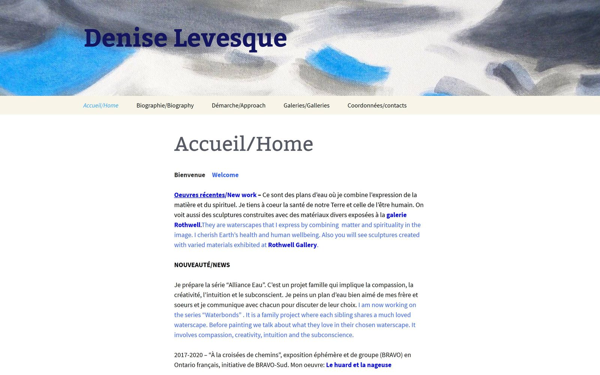
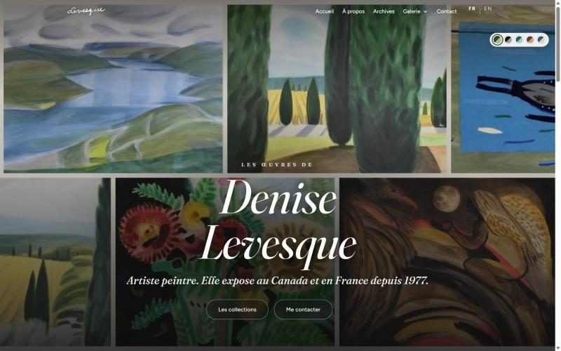
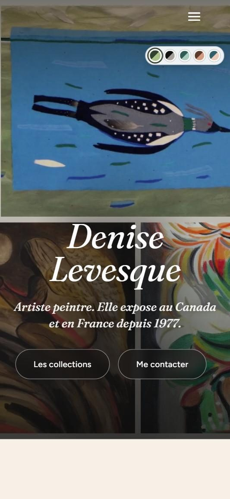
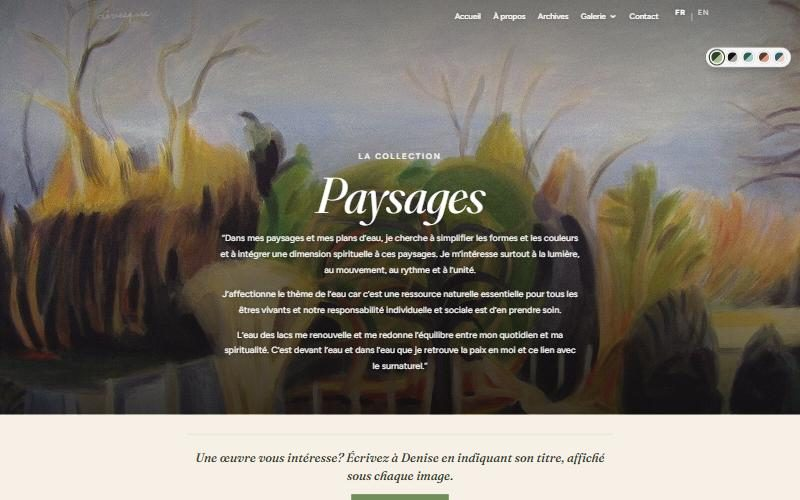
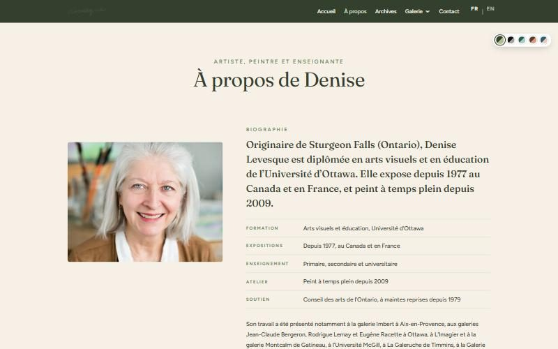
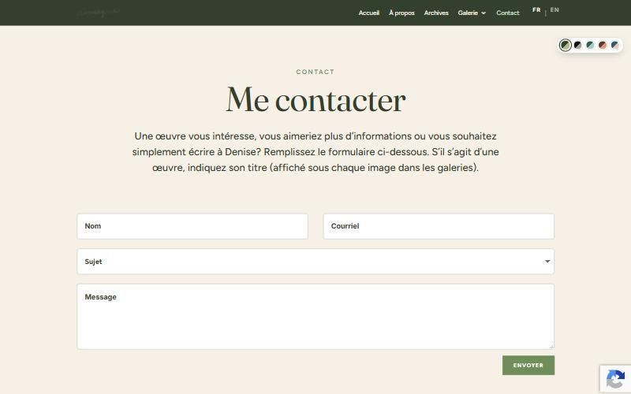

Denise Levesque
A modern, bilingual portfolio for a painter who has exhibited in Canada and France since 1977, rebuilt on WordPress so she can keep updating it herself.
The new site is in final review on a staging address before launch.
Before and after
The same artist, the same paintings, the same WordPress, made calm, clear and bilingual.



The goal
Denise Levesque’s website had grown over the years into nine gallery pages, long mixed French-and-English text, and heavy, full-size images. Her paintings deserved a calmer showcase, and visitors had no clear way to ask about a piece.
Denise was comfortable with WordPress and wanted to keep it as her content management system. So the job was to modernize the site inside WordPress: no new platform to learn, no lost content, and no broken links.
What I built
- Kept WordPress (Divi and Polylang), so Denise still edits her own pages, artworks and exhibitions
- Galleries simplified from nine menu entries to three main collections, plus an Archives page for earlier series
- New About page: key facts at a glance, and her full exhibition history as a clear timeline instead of closed accordions
- Contact page that every “Interested in an artwork?” button now leads to
- Bilingual, done properly: 146 grammar and wording fixes in French and English, and an English CV that is finally in English
- Accessible artwork: 303 paintings given text descriptions for screen readers and Google Images
- Faster pages: lighter WebP images, and videos that load only when someone presses play
- No broken links: every old address redirects to the right section of its new page
Details



Results
The new site is in final review with Denise on a staging copy before it goes live. Measured on that copy:
6.7 MB → 1.5 MB
Images on the home page, with the same look. All the images the site can show went from 36 MB to 12 MB.
303 artworks
Now described in both languages for people using screen readers, and for Google Images.
12 old addresses
Redirect to the right section of the new pages, so links from galleries and search results keep working.
Have a WordPress site that needs a refresh?
Clear, fixed prices. I reply within 1 business day.